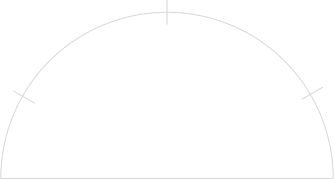
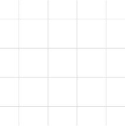

면접영상
면접 영상은 분석레포트 생성일로부터 90일간 제공됩니다.
면접질문1
시장에서 연착륙할 잠재력이 있으면서도 고객의 니즈를 충족할 수 있는
제품을 생산하는 것의 중요성이 높아지고 있습니다. 이는 소비자의 선호도가
급변하는 시대적 맥락과 일맥상통하는데요. 이러한 시대를 맞이하여
생산관리단에서 이루어져야 하는 변화는 무엇이 있을지 설명해주세요.
면접질문2
시장에서 연착륙할 잠재력이 있으면서도 고객의 니즈를 충족할 수 있는
제품을 생산하는 것의 중요성이 높아지고 있습니다. 이는 소비자의 선호도가
급변하는 시대적 맥락과 일맥상통하는데요. 이러한 시대를 맞이하여
생산관리단에서 이루어져야 하는 변화는 무엇이 있을지 설명해주세요.
면접질문3
시장에서 연착륙할 잠재력이 있으면서도 고객의 니즈를 충족할 수 있는
제품을 생산하는 것의 중요성이 높아지고 있습니다. 이는 소비자의 선호도가
급변하는 시대적 맥락과 일맥상통하는데요. 이러한 시대를 맞이하여
생산관리단에서 이루어져야 하는 변화는 무엇이 있을지 설명해주세요.
영상 종합분석도
홍길동님은 시선분포 64점, 어깨각도 42점, 얼굴각도 58점,
어깨움직임 47점, 목소리톤 35점, 목소리속도 15점으로 나왔습니다.
응시자
전체평균
그룹평균
AI분석을 위한 목소리, 얼굴, 상체 정보가
확인되지 않아 분석이 어렵습니다.
총 3번의 면접영상에서 시선변화, 어깨각도, 얼굴각도, 어깨움직임,
목소리톤, 목소리속도 평균을 그래프화 합니다. 각각의 분석항목들을
점수화하여 분포도가 넓은 면적을 나타낼수록 인터뷰 중 안정적임을 나타냅니다.
감정분석
홍길동님이 보여준 가장 높은 비율의 감정상태는 놀람(90%)입니다.
응시자
전체평균
그룹평균
AI분석을 위한 목소리, 얼굴, 상체 정보가
확인되지 않아 분석이 어렵습니다.
총 3번의 면접영상에서 놀람, 공포, 혐오, 행복, 슬픔, 화남, 중립 7가지 감정의 평균 비율입니다. 면접에서의 표정, 안면분석을 통해 호감도와 감정상태를 보여줍니다.
시선분포
높음
낮음
AI분석을 위한 목소리, 얼굴, 상체 정보가
확인되지 않아 분석이 어렵습니다.
전체평균
그룹평균
시선분포의 분포도가 중앙에 위치할수록 면접 중 안정적임을 나타냅니다.
영역색이 진할 수록 시선이 오래 머무른 곳이며, 영역이 널리 흩어져 있다면 시선변화가 많음을 의미합니다.
시선변화는 직무에 필요한 리더쉽, 업무추진 및 실행력, 도전정신, 열정, 원만성, 외향성 등과 연관된 항목입니다.
제스처
홍길동님의 얼굴 주변 제스처를 취한 횟수는 평균 00회이며, 제스처를 유지한 시간은 평균 00초입니다.
 횟수
10회
횟수
10회
 시간
20초
시간
20초
잦음
없음
AI분석을 위한 목소리, 얼굴, 상체 정보가
확인되지 않아 분석이 어렵습니다.
전체평균
횟수 : 00
시간 : 00
그룹평균
횟수 : 00
시간 : 00
제스처에서는 면접 중 얼굴이나 머리에 손을 올려 표정을 가리거나 입을 가리는등 행동을 포함하여 면접 중 보였던 모든 제스처의 횟수와 유지한 시간을 보여줍니다.
제스처는 집중력, 사교성, 표현능력, 비상시 대처능력과 커뮤니케이션 능력 등과 연관된 항목입니다.
자세분석
자세각도
홍길동님의 머리와 어깨 자세각도는 머리가 00도, 어깨가 00도 입니다.



전체평균
머리 각도 : 00
어깨 각도 : 00
그룹평균
머리 각도 : 00
어깨 각도 : 00
AI분석을 위한 목소리, 얼굴, 상체 정보가
확인되지 않아 분석이 어렵습니다.
총 3번의 면접영상에서 얼굴과 어깨의 각도를 체크하여 응시자의 평균 자세를 보여줍니다.기울기가 높을 수록 면접시 바른 자세로의 교정이 필요합니다.
어깨움직임
홍길동님은 우측 어깨 00회, 좌측 어깨 00회의 움직임과 좌우로 00회의 움직임이 확인됩니다.

전체평균
우측 어깨 : 00
좌측 어깨 : 00
좌우 움직임 : 00
그룹평균
우측 어깨 : 00
좌측 어깨 : 00
좌우 움직임 : 00
AI분석을 위한 목소리, 얼굴, 상체 정보가
확인되지 않아 분석이 어렵습니다.
어깨의 움직임을 상하좌우 좌표를 체크하여 면접에서의 상체움직임 정도를 보여줍니다. 상하좌우의 좌표점 길이가 길수로 인터뷰 중 상체가 많이 흔들렸음을 의미합니다. 움직임은 직무에 필요한 인내심, 믿음과 신뢰, 강한 의지, 진실성, 장기근속 가능여부 등과 연관된 항목입니다.
면접 진행시 어깨가 가려질 경우 측정결과가 부정확해질 확률이 높아지므로 머리카락 등으로 어깨가 가려지지 않도록 유의하시기 바랍니다.
면접 응답분석
홍길동님의 면접 응답분석은 면접별로 부족, 적합, 보통입니다.
| 질문 |
심층성향 |
응답 신중성도 |
| 부족 |
보통 |
적합 |
질문1.
기본질문 |
모든 응시자에게 공통으로 적용되는 기본 질문입니다.
응시자의 가치관, 경험등을 확인할 수 있습니다.
|
|
질문2.
직군관련질문 |
지원 직군에 대한 직무 관련 질문입니다.
지원 직군에 대한 이해도와 적합 인재인 지를 확인할 수 있습니다.
|
|
질문3.
직군심층질문 |
지원 직군에 대한 직무 심층 질문입니다.
지원 직군에 대한 이해도를 좀 더 심층적으로 확인할 수 있습니다.
|
|
AI분석을 위한 목소리, 얼굴, 상체 정보가
확인되지 않아 분석이 어렵습니다.
총 3번의 면접 질문의 답변을 통해 응시자가 응답에 대해 신중하게 답변을 하였는지 나타냅니다.
부족에 가까운 경우 답변에 대한 신중함과 직군에 대한 이해가 필요로 합니다. 적당한 목소리 크기와 또렷한 발음으로 응답을 하고,
질문에 대한 답변을 단답형으로 전달하는 것 보다 본인의 경험과 생각을 최대한 많이 전달되도록 하는것이 중요합니다.
언어분석
사용 단어 빈도
홍길동님의 자주 사용하는 단어는 oo, oo, oo입니다.
단어
단어
단어
단어
단어
단어
단어
단어
단어
단어
없음
AI분석을 위한 목소리, 얼굴, 상체 정보가
확인되지 않아 분석이 어렵습니다.
단어 빈도수 그래프는 총 3번의 면접영상에서 자주 사용하는 단어 10순위를 선별하여 나열합니다. 어의 글자가 클수록, 중앙에 있을수록 사용 빈도수가 높음을 의미합니다.
직무언어 사용 빈도
홍길동님이 자주 사용한 상위 직무언어는 oo입니다.
단어
단어
단어
단어
단어
없음
AI분석을 위한 목소리, 얼굴, 상체 정보가
확인되지 않아 분석이 어렵습니다.
직무언어 그래프는 총 3번의 면접영상에서 자주 사용하는 직무언어 5순위를 선별하여 나열합니다. 단어의 글자가 클수록, 중앙에 위치할 수록 사용 빈도수가 높음을 의미합니다.
언어성향
홍길동님은 긍정 성향의 어휘를 많이 사용한 것으로 확인됩니다.
응시자


부정
중립
긍정
AI분석을 위한 목소리, 얼굴, 상체 정보가
확인되지 않아 분석이 어렵습니다.
언어 성향 그래프는 총 3번의 면접영상에서 답변한 어휘를 분석하여 인공지능을 통해 긍정, 부정, 중립으로 구분지어 그래프로 나타냅니다.
음성분석
목소리톤
홍길동님은 2번 질문에서 전체평균에 가까운 목소리톤으로 답하였습니다.
0
50
100
AI분석을 위한 목소리, 얼굴, 상체 정보가
확인되지 않아 분석이 어렵습니다.
전체평균
그룹평균
목소리톤 그래프는 총 3번의 면접영상 각각을 분석하여 평균화 한 수치입니다.
목소리톤 변화는 직무수행능력, 피칭 능력, 새로운 프로젝트 도전 정신, 업무 실행력 및 추진력, 대인관계 개방성 및 융통성 등과 연관된 항목입니다.
목소리속도
홍길동님은 2번 질문에서 전체평균에 가까운 목소리속도로 답하였습니다.
0
50
100
AI분석을 위한 목소리, 얼굴, 상체 정보가
확인되지 않아 분석이 어렵습니다.
전체평균
그룹평균
목소리속도 그래프는 총 3번의 면접영상 각각을 분석하여 평균화 한 수치입니다.
목소리속도는 배려심, 인성, 가치관, 비상시 대처능력, 소통능력 등과 연관된 항목입니다.
면접 진행 전 마이크 체크 및 면접 중 발성으로 분석되므로, 마이크 체크 및 발성이 체크되지 않을 경우 분석에 영향을 줄 수 있습니다.
우선 순위에서 제외
- 맥박, 체온 등을 이용한 분석
- 차후 기술 적용